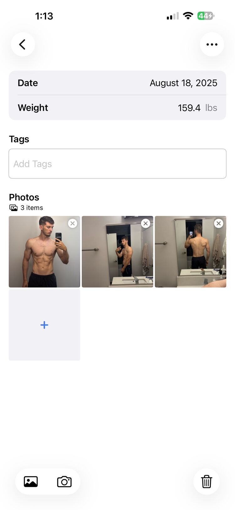
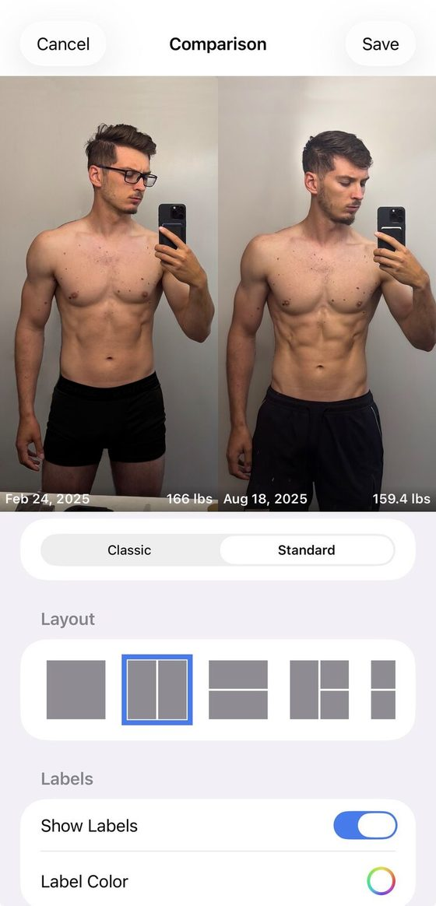
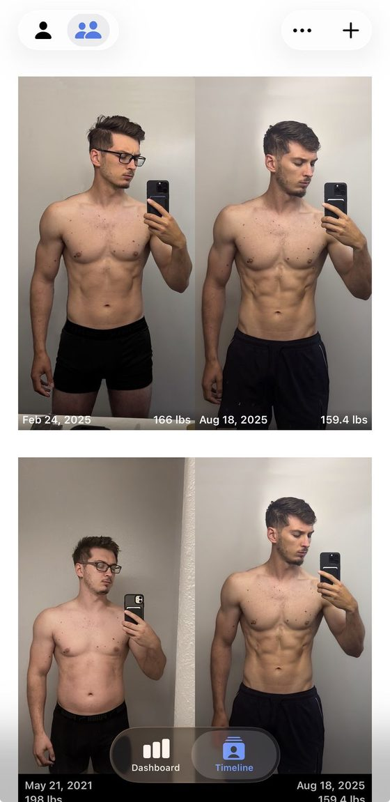
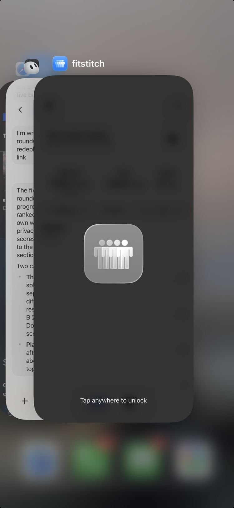

Blog · Best progress photo apps · [DRAFT: noindex, not published; publish date TBD] · Mark Stepchin
Fit-Stitch review: $4.99 once, iCloud sync, and the weakest compare I tested
Full disclosure: I build Recomp, a free progress photo app that competes with this one. No app pays me [CONFIRM: no ads, affiliate links or partner deals]. This review expands the Fit-Stitch entry in my roundup of the best progress photo apps, scored with the same kit. I rewrote it from my hands-on notes on Oct 2, 2026.
What it costs
$4.99 upfront, with no in-app purchases and no account. Every other paid app I graded sells a subscription. Fit-Stitch has been on the App Store since Jan 9, 2014.
Taking a check-in
I scored capture 4 out of 5. Date, weight, tags and several camera or library photos go on one form. There's no ghost overlay and no front, side and back slots. [CONFIRM: no timer; the listing doesn't mention one] [TODO: seconds and taps to a saved check-in]
Tags arrived in 7.0 on Aug 11, 2026. It's the only app of the 10 I checked with free-text tags. In my study of 732 App Store reviews, nobody asked for them, though Fit-Stitch has had about one written review since they shipped.

Lining photos up
I scored alignment 0: there's no auto-alignment, no manual alignment and no ghost overlay. Lining up a pair is on you, at capture. [TODO: the rubric floor is 1; use 0 or 1?]
Comparing two dates
I scored comparison 1. Each comparison is a card built in its own form, with no date scrubbing, so three old dates take three forms. The cards print the date and weight on each photo, which is useful once they exist.
Its older reviewers liked a different layout. Three reviews from 2014 to 2016 discuss its before/after layouts, and one asks it to "go back to the old before/after set up."


Importing old photos
I scored import 0. Nothing imports in bulk, and dates don't fill in from photo metadata, so a 450-photo archive means adding photos one at a time. Import is a bonus score, kept out of the total. [TODO: performance with the full library]
Where your photos live
Photos stay on your device, with optional sync to a private iCloud container tied to your Apple ID. The developer has no access to it, per its policy. The option first arrived as an "iCloud backup option" in 5.0 on Apr 10, 2017. Delete All Data also wipes the iCloud copy, so it's sync, not a separate backup. [TODO: delete-and-restore test]
Face ID locks the app and blurs it in the app switcher. I proposed 5 out of 5 for privacy, provisionally. Fit-Stitch alone accounts for 10 of the 26 lock or privacy mentions in my review study, mostly praise for its passcode.
[TODO: label vs policy conflict. The label lists Health & Fitness, User Content and Crash Data as Data Not Linked to You. The policy, updated Jul 27, 2026, says "Fit-Stitch does not include any third-party analytics, crash reporting, or advertising SDKs." Raise it; don't resolve it.]

What reviewers say
A Sep 17, 2026 review says new photos disappeared. Version 7.0.2 on Sep 30, 2026 says it "Fixed an issue where newly added photos could fail to save when iCloud storage was full." [CONFIRM: the fix holds] Reminders are the other theme: 12 of the 32 positive reminder reviews in my study are Fit-Stitch's.
Scores so far
| Score (1 to 5) | Fit-Stitch | Status |
|---|---|---|
| Capture and tracking | 4 | Scored |
| Alignment | 0 | Scored; below the rubric floor of 1 |
| Comparison | 1 | Scored |
| Design | TBD | "Simple and clean" |
| Performance | TBD | |
| Privacy | 5 | Provisional |
| Backup | TBD | Restore test pending |
| Import (bonus, outside the total) | 0 | Scored; below the rubric floor of 1 |
| Total out of 35 | TBD | 10 from the four scored |
[CONFIRM: rescore on the v8 rubric or the Oct 4 measured tiers. Power-user suite piece label.]
The numbers
Every app's numbers sit side by side, with test dates, in my test data.
| Field | Value |
|---|---|
| Full name | Fit-Stitch Progress Tracker |
| Rating | 4.77 from 331 US ratings (Oct 3, 2026) |
| Written reviews, Jul 2 to Oct 2, 2026 | 1 (US feed) |
| Written reviews in Apple's feed | 126 in my study |
| First released | Jan 9, 2014 |
| Last updated | Sep 30, 2026 |
| Version tested | 7.0.2 [CONFIRM] |
| Requires | iOS 17.0+ on iPhone and iPad; no Android ("Not at this time," per its FAQ) |
| App Store | Fit-Stitch Progress Tracker on the App Store |
Who should use something else
If you compare often, Fit-Stitch's one-form-per-comparison gets old fast. For the most compare modes and auto-align, see my Thumbstone review. For date-reading import, see Then & Now. For measurements and Apple Health, see Lasmit.
What I haven't tested yet
I still need design and performance scores, and a delete-and-restore with iCloud sync on. That restore decides whether its sync really answers "what if I lose my phone?" If you've restored Fit-Stitch on a new phone, email me at support@progressphotos.app.
See the progress buried in your camera roll
Compare progress photos on a before-and-after timeline, scroll to any date instantly, and align photos on the fly. Recomp never uploads your photos. It sends anonymous usage analytics and crash reports, with no account and no tracking.